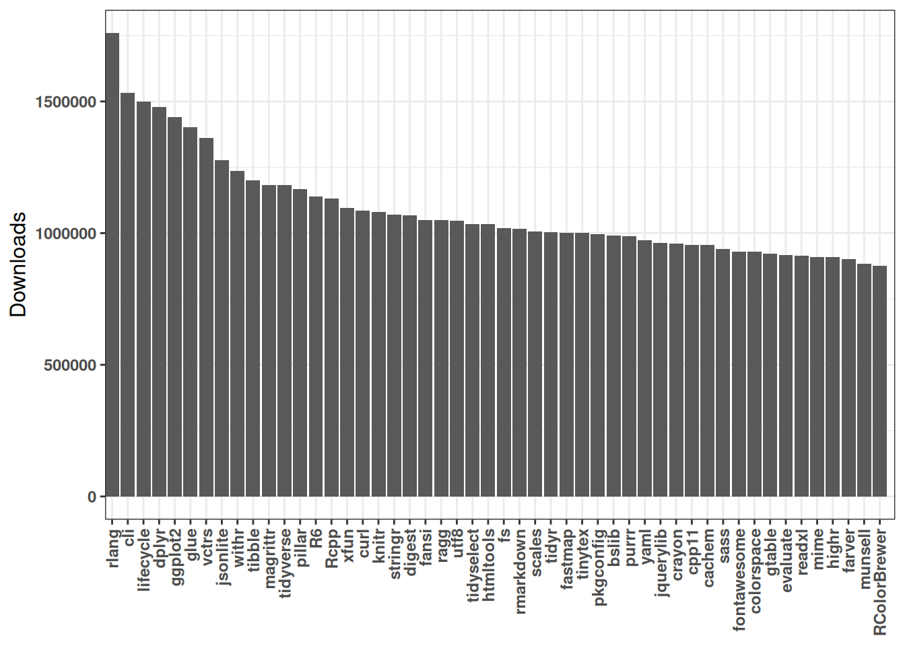

library(tidyverse)
library(magrittr)
library(cranlogs)
library(igraph)
library(visNetwork)Après un moment à coder en Python tous les jours pour mon travail, j’avais besoin de faire une pause et d’effectuer quelques analyses en R ! Depuis le début de mon postdoc, je n’avais pas suivi les dernières tendances concernant les packages R. Dans cet article, je vais analyser des données sur les packages R pour voir quels sont les packages les plus téléchargés au cours des dernières semaines. Je vais aussi visualiser toutes les relations entre les packages R en examinant leurs dépendances requises.
Commençons par importer les packages nécessaires pour cette analyse :
Visualisation des dépendances entre les packages
Une fois que j’ai vu le graphique ci-dessus, je me suis demandé quelles étaient toutes les dépendances entre ces packages et je voulais savoir lequel était le plus “connecté”. Pour répondre à cette question, j’avais besoin de plus de données, notamment sur les dépendances requises de chaque package. Après quelques recherches, j’ai découvert que les données sur les packages (y compris la description et les dépendances) pouvaient être extraites avec une fonction du package tools :
df_pkg <- tools::CRAN_package_db()[, c('Package', 'Imports')]
df_pkg <- df_pkg %>% filter(if_any("Package", ~.x %in% popular_pckg[["package"]]))Cependant, cette fonction extrait les données pour tous les packages, et je souhaite effectuer l’analyse uniquement sur les 50 packages les plus populaires. J’ai donc décidé de coupler la fonction du package cranlog avec la base de données que j’ai collectée avec la fonction CRAN_package_db() :
# Can be quite long hence the parallel map
#plan(multisession, workers = 12)
monthly_dl <- map(list(df_pkg$Package), function(x){sum(cran_downloads(x, 'last-month')$count)})
df_pkg$monthly_dl <- unlist(monthly_dl)
# write_csv(df_pkg, 'R_pkg_dl.csv')On peut ensuite filtrer par nombre de téléchargements :
df_pkg <- df_pkg %>%
distinct(Package, .keep_all= TRUE) %>%
arrange("monthly_dl") Maintenant, il est temps de préparer les données pour une visualisation graphique. Pour créer un graphique, on a besoin de deux tableaux. Le premier doit contenir toutes les relations entre les nœuds (dans notre cas, les nœuds sont des packages), il a deux colonnes : ‘from’ et ‘to’. Le deuxième tableau contient une seule colonne avec les noms des nœuds.
import_cleaning <- function(text){
text <- gsub('\\s*\\([^\\)]+\\)', '', text)
text <- gsub('\\n', ' ', text)
text <- gsub(' ', '', text, fixed = TRUE)
text <- str_split(text, ',')
return(text)
}
import_cleaning(df_pkg$Imports[2])
test <- df_pkg %>%
mutate(cleaned_imports = import_cleaning(Imports))
df_target <- function(x,y){
df <- expand.grid(from=x, to=unlist(y))
return(df)}
for(i in 1:nrow(test)){
if(i == 1){
df_res = df_target(test$Package[i], test$cleaned_imports[i])
}else{
df_res = rbind(df_res, df_target(test$Package[i], test$cleaned_imports[i]))
}
}
links <- df_res %>%
filter(!is.na(to) | (to == ""))
nodes <- tibble(id=as.character(unique(unlist(df_res))))Une fois les deux matrices créées, on peut visualiser interactivement le réseau graphique avec le package visNetwork :
visNetwork(nodes, links) %>%
visIgraphLayout(type = "full") %>%
visNodes(
shape = "dot",
color = list(
background = "#0085AF",
border = "#013848",
highlight = "#FF8000"
),
scaling = list(min=2,
max = 10),
shadow = list(enabled = TRUE, size = 10)
) %>%
visEdges(
arrows='to',
shadow = FALSE,
color = list(color = "#0085AF", highlight = "#C62F4B")
) %>%
visOptions(highlightNearest = list(enabled = T, degree = 1, hover = T)) %>%
visLayout(randomSeed = 11)N’hésitez pas à déplacer, zoomer ou sélectionner des packages pour voir leurs dépendances !
Comment trouver les packages R les plus populaires ?
La première étape consiste à collecter les données sur le nombre de téléchargements pour chaque package. Heureusement pour nous, il existe un package appelé cranlogs qui fait exactement ce dont on a besoin ! Avec une simple ligne de commande, on peut collecter les données sur les 50 packages ayant eu le plus de téléchargements au cours du dernier mois, puis on peut tracer le résultat :

Je pensais que ce graphique serait plus difficile à réaliser à cause de la disponibilité des données, mais avec le bon package, c’est facile !